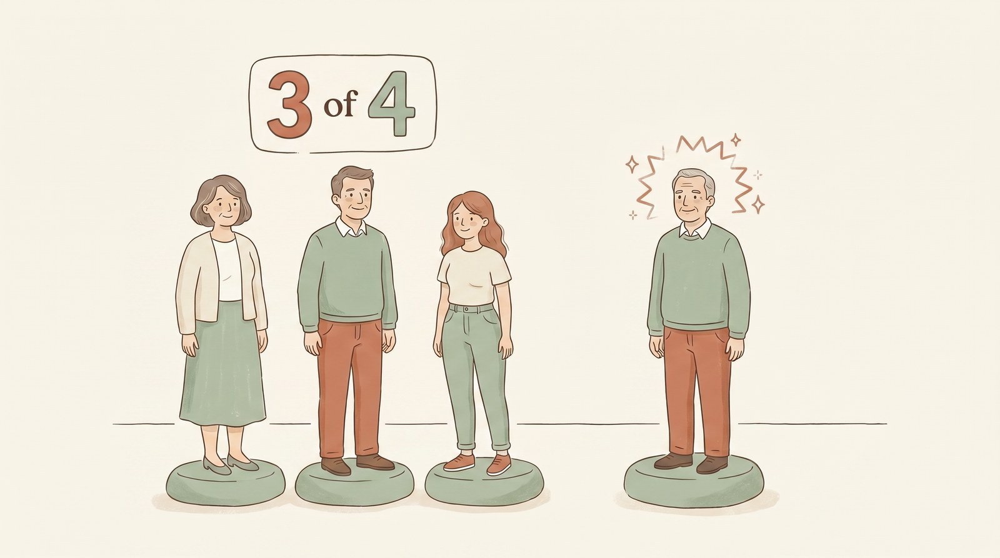

Understanding migraines
A migraine is not just a bad headache. It is a neurological condition with its own biology, its own phases, and its own rules. Knowing how it works is the first step to taking back control.

A migraine attack is a whole-body neurological event, not a character flaw or a lack of toughness.
What a migraine actually is
A migraine is a neurological condition, a disorder of how the brain and its nerves process signals, not simply pain in the head.(1) During an attack, a network of nerves wrapped around the blood vessels of the head, the trigeminal system, becomes overactive and releases a messenger molecule called CGRP (calcitonin gene-related peptide). CGRP widens those vessels and switches on pain and inflammation. Its levels rise during an attack and fall again when the attack is treated, which is why several of the newest migraine medicines are built to block it.(1)
This is also why ordinary triggers feel so amplified. A migraine brain is more sensitive to light, sound, smell, and movement than usual, so things you would barely notice on a good day become unbearable. None of this is imagined, and none of it is your fault.
The four phases of an attack
Many people think a migraine is only the headache. In fact an attack often moves through up to four phases, and recognising the early ones gives you a head start on treating it.(1, 2)

1. Prodrome Warning signs
Hours to a day or two before the pain, the prodrome brings early signs like yawning, food cravings, mood changes, neck stiffness, fatigue, or trouble concentrating. Noticing them is your earliest chance to act.

2. Aura About 1 in 4 people
About one in four people get aura, a wave of reversible nerve symptoms: shimmering or zig-zag visual patterns, a blind spot, tingling that creeps up an arm, or trouble finding words. It builds over 5 to 60 minutes and then fades.

3. Headache The attack
The headache itself, untreated, lasts anywhere from 4 to 72 hours. It often throbs, sits on one side, and gets worse with movement, light, and sound.(2, 3)

4. Postdrome The recovery
The postdrome, or “migraine hangover,” can leave you drained, foggy, or tender for up to a day after the pain lifts.
Migraine with and without aura

No aura AuraAbout three in four people with migraine never get aura; their attacks go straight from warning signs to headache. The aura that the other quarter experience comes from a slow wave of changing electrical activity that spreads across the surface of the brain, which is why a visual aura tends to drift and grow over several minutes rather than appearing all at once.(4) Aura is not dangerous in itself, but a few aura types (sudden weakness on one side, or symptoms that do not fully reverse) need a doctor’s review, which is covered at the end of this guide.
How a migraine is diagnosed
There is no blood test or scan that diagnoses migraine. Doctors use an agreed checklist of symptoms (the international headache criteria).(2)
In plain terms, a typical migraine without aura means several attacks where the headache:
- Lasts 4 to 72 hours when it is not treated.
- Has at least two of these four features: it is on one side, it throbs or pulses, it is moderate to severe, and it is made worse by routine activity like walking or climbing stairs.
- Comes with nausea (with or without vomiting), or with sensitivity to both light and sound.
Because so many things can cause head pain, clara does not diagnose migraine online. We build your plan once a doctor has confirmed the diagnosis, so we are treating the right thing.
Episodic and chronic migraine
Migraine is described by how often it happens.
Episodic migraine means headaches on fewer than 15 days a month.
Chronic migraine means headaches on 15 or more days a month for more than three months, with at least 8 of those days being migraines.(2, 3)
The line matters because some treatments, and some safety limits on pain relievers, change once attacks become frequent. Frequent attacks can also be made worse by taking acute pain medicine too often, something we explain in the Treatments guide.
How common is it, and who gets it
Migraine is one of the most common conditions in the world, affecting roughly 1 in 7 people, and it is among the leading causes of disability worldwide, especially in the working years.(5, 6) Recent figures put it at about 12.7% of adults in the United States and 13.2% in Canada.(7) It is about three times more common in women than men, largely because of the role of estrogen, and it peaks between the ages of 25 and 55, the busiest years of most people’s lives.(3, 5)
If you have migraine, you are in very large company, and that is part of why the science has moved so quickly: this is a serious, well-studied condition with real, effective treatments.
The takeaway
Migraine is a real neurological condition with a predictable pattern. Learning your own phases and warning signs is powerful, because the earlier you recognise an attack, the better every treatment works.
When to see a doctor first
Most headaches are not dangerous, but a few patterns need prompt, in-person care rather than a self-care plan.(8) Seek urgent care if you have:
- A sudden, severe “worst headache of your life,” reaching full force within seconds to a minute.
- A headache with fever and a stiff neck, a new rash, or confusion.
- New weakness, numbness, trouble speaking, or vision loss that does not fully go away.
- A headache that follows a head injury.
- A new or clearly different headache if you are over 50, are pregnant, have cancer, or have a weakened immune system.
- A real change in your usual migraine pattern, or attacks that keep getting worse.
Now that you know what a migraine is, the next two guides put it to work: the treatments clara offers to stop and prevent attacks, and the everyday habits that lower how often they come.
Sources
- Ashina M. Migraine. New England Journal of Medicine. 2020;383(19):1866-1876.
- Headache Classification Committee of the International Headache Society. The International Classification of Headache Disorders, 3rd edition (ICHD-3). Cephalalgia. 2018;38(1):1-211.
- Robbins MS. Diagnosis and management of headache: a review. JAMA. 2021;325(18):1874-1885.
- Ferrari MD, Klever RR, Terwindt GM, Ayata C, van den Maagdenberg AMJM. Migraine pathophysiology: lessons from mouse models and human genetics. Lancet Neurology. 2015;14(1):65-80.
- Ashina M, Katsarava Z, Do TP, et al. Migraine: epidemiology and systems of care. Lancet. 2021;397(10283):1485-1495.
- GBD 2021 Nervous System Disorders Collaborators. Global, regional, and national burden of disorders affecting the nervous system, 1990-2021. Lancet Neurology. 2024;23(4):344-381.
- Lisicki M, Muñoz-Cerón J, Sarmento EM, et al. Pan-American migraine prevalence: findings from the Americas Migraine Observatory Study (AMIGOS). Cephalalgia. 2026;46(3):3331024261420837.
- Do TP, Remmers A, Schytz HW, et al. Red and orange flags for secondary headaches in clinical practice: SNNOOP10 list. Neurology. 2019;92(3):134-144.
This guide is for education and is not a substitute for your clara doctor’s advice. A migraine diagnosis, and your treatment plan, are decisions you and your clara doctor make together.